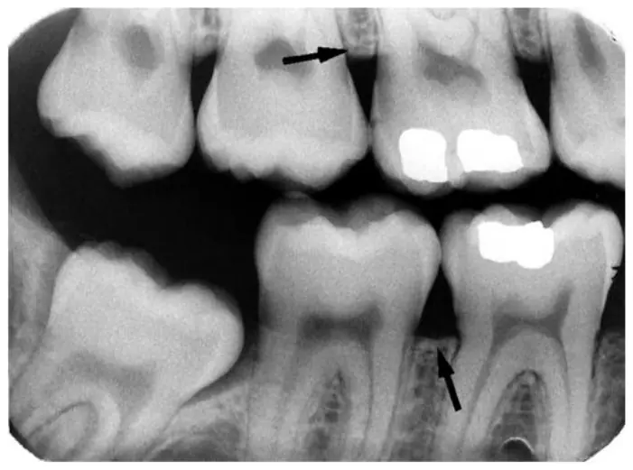
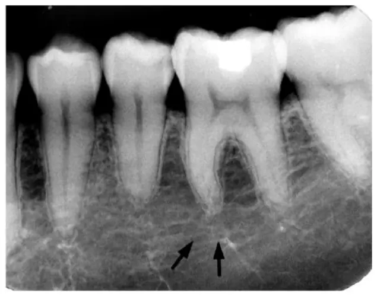

نسخه استخراجشده؛ ترجمه یا تأیید علمی انجام نشده است. وضعیت: captured
مهمترین عددِ این یونیت همین است، و هر روز در مطب به کارت میآید.

کرست آلوئولار چیست؟ «حاشیهی لثهای زائدهی آلوئولار که میان دندانها امتداد مییابد، روی رادیوگرافی بهصورت یک خط رادیواوپک نمایان است.»
و مرز نرمال: «سطح این کرست استخوانی نرمال در نظر گرفته میشود وقتی ۰٫۵ تا ۲ میلیمتر آپیکالتر از اتصال مینا-سمانِ دندانهای مجاور باشد.» کرست ممکن است با افزایش سن آپیکالتر برود و در بیماری پریودنتال تحلیل چشمگیر نشان دهد.
و محدودیتی که در تفسیر باید رعایتش کنی: «رادیوگرافی فقط میتواند موقعیت کرست را نشان دهد؛ تعیین معنای این سطح، اساساً یک تصمیم بالینی است.» یعنی رادیوگرافی به تنهایی پریودنتیت را تشخیص نمیدهد.
شکل کرست تابع فاصلهی دندانهاست: در ناحیهی قدامی، بین انسیزورهای نزدیکبههم، کرست «به تنها یک نقطهی استخوانی کاهش مییابد». در خلفی صاف است، «موازی با و کمی پایینترِ خطی که اتصالهای مینا-سمانِ دندانهای مجاور را به هم وصل میکند».
و نشانهی طلایی که یک زاویه است، نه یک عدد: «کرست استخوان با لامینا دورا پیوسته است و با آن یک زاویهی تیز میسازد. گرد شدن این اتصالهای تیز، نشانگر بیماری پریودنتال است.» پس در هر بایتوینگ، هم سطح کرست را ببین هم تیزی زاویهاش.
و دامنهی طبیعیِ تراکم: تصویر کرست «از یک لایهی متراکم استخوان کورتیکال تا یک سطح صاف بدون استخوان کورتیکال» متغیر است. در حالت دوم، ترابکولهای سطحی اندازه و تراکم نرمال دارند و در نواحی خلفی این دامنه «در صورتی که استخوان در سطح درست نسبت به دندانها باشد، نرمال فرض میشود».
ولی یک استثنای ناحیهای: «غیبت تصویر کورتکس میان انسیزورها از نظر بسیاری، نشانهی بیماری آغازین است — حتی اگر سطح استخوان غیرطبیعی نباشد.» همین یافته در خلفی نرمال است و در قدامی مشکوک؛ محل را با یافته اشتباه نگیر.
زیر ریشهی مولر پایین، ناحیهای تقریباً خالی از ترابکول میبینی. ضایعه است یا آناتومی؟ یک نقشه و یک روال در دست داری.

اول ساختار: استخوان کنسلوس (ترابکولار، اسفنجی) «میان صفحات کورتیکال در هر دو فک قرار دارد» و از «صفحات و میلههای نازک رادیواوپک (ترابکول) ساخته شده که حفرههای کوچک رادیولوسنت مغز استخوان را احاطه میکنند».
و یک نکتهی مهم که کمتر گفته میشود — الگوی ترابکولاری که میبینی از دو منبع میآید: «نخست خودِ استخوان کنسلوس. دوم سطح اندوستئالِ استخوان کورتیکال بیرونی، جایی که استخوان کنسلوس با کورتیکال جوش میخورد؛ در این سطح صفحات ترابکولار نسبتاً ضخیماند و سهم چشمگیری در تصویر رادیوگرافی دارند.»
چهار الگوی ناحیهای — این نقشه را حفظ کن:
و منطقی که این نقشه را بهیادماندنی میکند: حدس زده میشود که جایی که صفحات کورتیکال ضخیماند (مثل ناحیهی خلفی بدنهی مندیبل)، «مهاربندی داخلی توسط ترابکولها لازم نیست»؛ در مقابل در ماگزیلا و مندیبل قدامی که کورتکس نازک و کمصلب است، ترابکولها پرشمارترند و به فک تقویت داخلی میدهند.
روال استاندارد برای «تنکی ترابکولار: واریاسیون یا بیماری؟» — چهار گام:
و کورتیکال: «محتوای مینرال بالاتری از استخوان کنسلوس مجاور دارد و رادیواوپکتر دیده میشود»؛ سطح اندوستئالش صاف است و با ترابکولها ادغام میشود. ضخامتش با محل تغییر میکند و «بهویژه استخوان باکالِ مجاور دندانها اغلب نازک است و روی رادیوگرافی بهسختی تشخیص داده میشود» — به همین دلیل فنستراسیون و دهیسنس را باید در CBCT دید، نه در پریاپیکال.